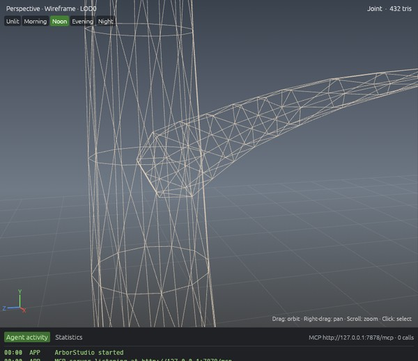
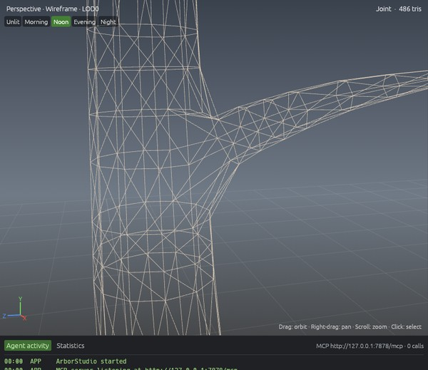
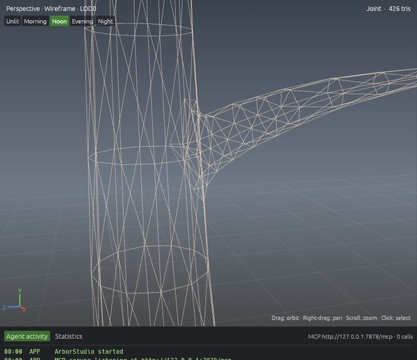
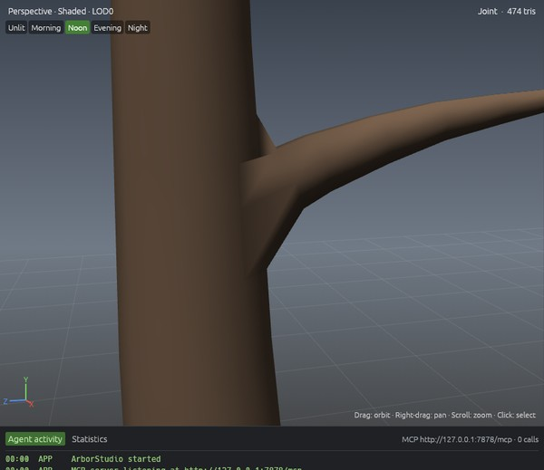

Branch joints
Where a branch or root meets its parent, ArborStudio can join the two surfaces into one mesh. Joined trees have no hidden geometry inside the parent, no visible seam and continuous bark texture across the joint.
Settings
The joint settings are in the Tree section of the Properties panel, which is visible when no generator is selected.
- Join branches to parent
- Joins branches and roots to their parents. When off, each branch is a separate tube whose base is pushed into its parent. That is the cheapest option, but the parent's surface cuts through the branch.
- Joint method
- How joined branches meet their parent:
- Cut & stitch (one mesh) cuts an opening in the parent that fits the whole base of the branch and stitches the opening to the branch. The result is one watertight mesh.
- Weld (wrap onto parent) leaves the parent's surface whole and wraps the base of the branch onto it with a curved fillet. Normals, colour and wind weights blend into the parent, so the joint shades smoothly. It uses fewer triangles than stitching.
- Branch welding 0 to 1
- Widens the base of every branch into a collar, as wood grows around the branch's base on a real tree. This slider sets the value for all branch generators; each branch generator also has its own Branch welding setting in its Skin section. When the levels differ, the slider shows (mixed).




Bark texture at joints
The strip between the opening in the parent and the branch uses the branch's own texture coordinates, continued from the branch, so the bark is not smeared between the parent's and the branch's mapping. Where the branch and its parent use the same material (with Stitch), the bark also cross-fades: at the opening the strip shows exactly the parent's bark, and over about three branch radii it fades into the branch's own. There is no line where the two meet, which matters most where big roots flare out of the trunk. See Materials and textures for how bark textures are mapped.
Roots
Roots and side roots are joined in the same way. A trunk with roots reaches a little below the ground, so every root grows out of bark and the base of the trunk stays closed.
Choosing a method
| Method | Use it when |
|---|---|
| Cut & stitch | You need a closed mesh, for example for baking, 3D printing or close-up views, or when branches are almost as thick as their parent. |
| Weld | You want smooth shading at joints with a low triangle count, as in most real-time uses. |
| Join off | Triangle count matters most, for example for distant trees or very large forests. |